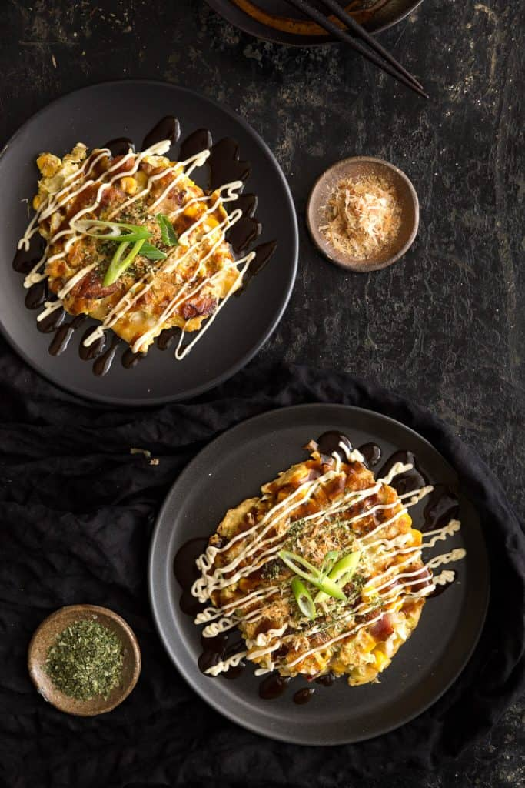

Okonomiyaki

Description
As a quick translation, okonomi (as you like it) + yaki (grilled) stands for a simple pancake batter made from flour, eggs and stock flavoured water (usually dashi), filled with cabbage and other tasty ingredients like pork, shrimp or corn.
You'll find this classic Japanese street food dish at markets, festivals and specialty okonomiyaki restaurants where it's cooked on large hot plates in the middle of the table. It's also a popular meal Japanese families will cook at home, usually tweaking the recipe to suit their own tastes, methods or to use up ingredients they already have on hand.
Ingredients
- Pork/Bacon
- Cabbage
- Flour
- Dashi Powder
- Okonomiyaki Sauce
- Kewpie Mayonnaise
- Dried Seaweed Flakes
- Dried Bonito Flakes
- Pickled Red Ginger (Optional)
- Japanese 7 Spice (Optional)
Steps
-
Fry the bacon until cooked through and crispy, then set aside to cool. No need to use oil here, as the bacon will release its own oil as you cook it.
-
To make the batter, combine the eggs and dashi powder dissolved in the warm water in a small mixing bowl and beat gently. In a separate large mixing bowl add your flour and cornflour, then pour over with the egg and dashi stock mixture. Stir and combine until smooth.
-
Next, add the shredded cabbage, half of the green onion slices, cooked bacon and corn into the batter mixture. Mix until all the dry ingredients are evenly coated (but don't overmix, we want to keep that cabbage nice and fluffy). There shouldn't be much excess batter liquid at the bottom - if there is, just add a little more chopped cabbage and mix through gently.
-
Scoop out the mixture onto a large frying pan over medium heat. We like aiming for a circle shape about 10 cm / 4 inches wide. Cook each pancake for a few mins per side, until lightly browned on both sides.
-
Transfer your freshly cooked pancakes to serving plates, then top with drizzles of kewpie mayonnaise and okonomiyaki sauce. For even better tasting okonomiyaki, top with sprinklings of dried seaweed flakes, bonito flakes and a few slices of green onion to taste. You can also optionally top with the pickled ginger and Japanese 7 spice here.